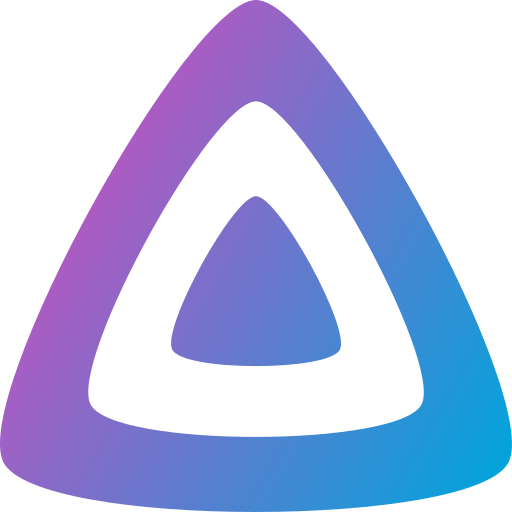
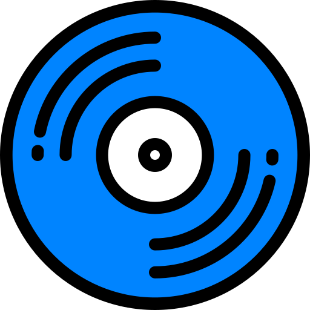
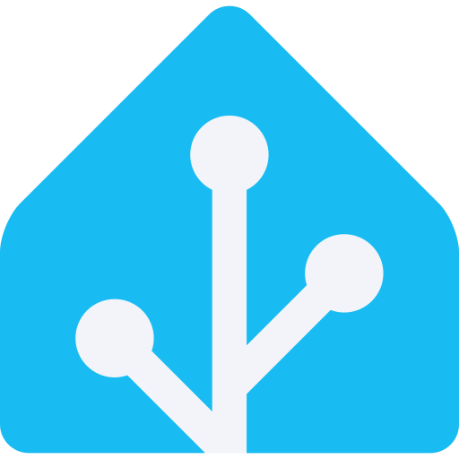

Tokens, components and live examples for HomersLab's two surfaces, in Apple's current style: the system font, Apple's neutrals, inset grouped lists and widgets, glass for everything that floats, and motion on springs. The accent is teal; status is green, orange and red.
Link two files
Tokens first, then the components. icons.js adds the outline set and the mark; motion.js screen changes and shared elements.
Classic teal, #1B6E66 and #5FB3A9. To move to the kit’s other teal, change --brand-accent-light and --brand-accent-dark: every tint, hover and focus ring follows.
Colour
When to use. The ground holds the page; cards, inset groups and widgets sit on it in the surface colour, one step lighter, with no line. The accent marks the one primary action, a link, a chosen chip and the data that matters, and never a status. Status is iOS green, orange and red: full strength for dots and bars, a darker variant for words, a pale tint for pills.
Light
Dark
Words are --text or --text-2, both at least 4.5:1 on every surface they sit on, fills included. --text-3 is for chevrons and the used part of a meter, never words.
Controls take --control-border (3.6:1), so a field or an off switch reads as a control. On is --switch-on, a green: a state, not the brand.
Dark is Apple's true black: elevation is lightness (black, then #1c1c1e, then #2c2c2e), and shadows go.
Type
When to use. One family: SF on Apple devices, Inter elsewhere (bundled, OFL). Three sizes do most of the work: a large title, the 15px body and the 13px subline. Every figure is tabular, so numbers keep their width as they change. Monospace is for real ids only: a plan id, a name on the mesh, a command.
Large title · 34/700 · 28 on a phoneGood afternoon, Inês.
Value · 28/7007 of 7
Title · 22/700Restore tests
Headline · 17/600What it creates
Body · 15/400Every app arrives wired: sign-in, a name, backups and health.
When to use. A 4px base, and one gutter (16px) across and down. A desktop page is a centred 1100px column of twelve 77px columns, so cards in different rows share their edges. Radii are soft and decided once: 22px for anything that holds content, 14px inside it, full round for buttons, pills and chips.
card 22
menu 18
inner 14
field 12
icon 22.5%
pill
Materials: glass
When to use. Glass holds what floats above the page and what you steer it with: the top bar once the page moves, the bar's buttons, the sidebar, the tab bar, sheets, menus, toasts, and Home's panels and widgets. What you read and work on in Admin (lists, tables, forms) stays on opaque cards, so it reads the same over anything. Each glass is a tint over a blur of what is behind it, a sheen at the top, a specular rim brightest at the top left, and a shadow.



ClearIllustrations only; never under wordsRegularHome's panels, widgets, the sidebar: over the wallpaperThickSheets, menus, toasts, the tab bar: words over anythingBarThe top bar, once the page scrolls under it
The glass level: one setting for every glass surface
A single number, --glass (0 Clear, 0.5 Balanced, 1 Frosted), sets the tint, blur, saturation and sheen of every glass surface: the bars, the sidebar, panels, sheets, menus, toasts and the tab bar. Solid is a separate choice, the look of reduced transparency, and the device’s reduced-transparency setting always wins. People choose it in Admin’s Settings › Appearance and in Home’s person menu (each person, each browser); a change glides there on the smooth spring.
Apps
Watch, listen, readJellyfin · FilmsNavidrome · Music
ClearThe most see-through: the wallpaper and what scrolls under it show most. Words get stronger ink and a denser plate.
Apps
Watch, listen, readJellyfin · FilmsNavidrome · Music
BalancedThe default: about half white in light, a smoked tint in dark.
Apps
Watch, listen, readJellyfin · FilmsNavidrome · Music
FrostedDenser: the colour behind shows, its shapes hardly.
Apps
Watch, listen, readJellyfin · FilmsNavidrome · Music
SolidNo transparency: the same as the device’s reduced transparency.
Try a level on this whole page
A card at rest--shadow-cardLifted, under the pointer--shadow-liftA glass panel--mat-depthFloating: sheets, menus, toasts--mat-depth-high
Light glass is see-through: regular is about half white, thick about two thirds, the bar about 60%, on a 30–40px blur with extra saturation, a faint inner light and the specular rim; the wallpaper’s teal, sky and sage blooms show through, and what scrolls under a bar tints it.
Contrast is checked against the real pixels behind each word, glass and all (AA in both themes). On a wallpaper page secondary text is one step darker (--text-2-on-wall), so the blooms can carry colour. Where a surface can’t promise AA by itself, the words sit on a denser plate (.plate, --mat-plate) rather than making the whole surface opaque.
Admin opens dark on every device, in Home’s dark look (true black, the wallpaper’s glow behind glass panels); its Settings offer Dark, Light or System, remembered per browser. Home follows the device.
Reduced transparency turns every material into its solid (white, or dark mode's elevations) and drops the blur; the rims and shadows stay, so the shapes still read.
The level:data-glass="clear|balanced|frosted|solid" on <html> (or on any part, as above), or --glass set to a number for the slider; HL.glass(v) applies it and HL.glassControl() draws the control. The plate under words runs the other way: denser as the glass gets clearer, so words keep AA at every level.
Never: glass on glass, glass under a table or a form, or clear glass under words.
When to use. Motion answers the person. A press goes down in 100ms and springs back; a toggle, a thumb and the tab bar's lens snap; a sheet, a menu and a toast spring from where they were asked for; a screen pushes in from the side it lives on and pops back; an app's icon flies from its row to its page; a list closes the gap a row leaves; progress fills. Home also rises on entry; Admin never moves by itself.
--spring-snappy · 418ms · toggles, presses, the tab bar's lens
A screen and a shared element: open an app, then go back
A list gains and loses rows; a job makes progress
Springs are Apple's: a response and a damping ratio, sampled into linear(). Classic's --spring (450ms, a little overshoot) stays for presses springing back and thumbs.
Screens change through the View Transitions API in motion.js: HL.run(update, {type}) with push, pop or fade; HL.morph for a shared element; HL.list for rows. The bars, the sidebar and the tab bar stay still. Without the API the change simply happens.
Durations: press 100 · colour 200 · fade 300 · snappy 418 · screen 480 · smooth 558 · bouncy 687 · reveal 700ms; a 45ms stagger between things that rise together.
Layers: sticky bar 10 · tab bar 20 · menu 40 · scrim 50 · sheet 51 · toast 70 · the browser's own prompt 80 · the prototype bar 100.
Reduced motion: screens cross-fade in 160ms; nothing slides, flies, bounces or loops; Home doesn't rise.
Never: movement nobody asked for in Admin, a bounce on data, a moving colour.
When to use. The logo comes from the kit (brand/kit; its runtime files are in logo/). Where the product needs its name, use the horizontal lockup, never the name retyped: the wordmark is Figtree, outlined. Beside a title of its own (Home’s household, a phone’s bar), the mark stands alone. In the interface it is inlined from icons.js and coloured by the accent. Each app keeps its product name and its own icon, on a white squircle in both themes, so a family recognises Immich by sight.
16 cut24 master32 cutPWADesktop app
Each size has its own drawing: the 16 and 32 px cuts are hand-fitted, the master lands on whole pixels at 24 and 48 px, and at 64 px and up a dark background gets the reversed cut, one unit thinner. Keep one stem of clear space, a quarter of the mark’s height, on every side.
28 · 32 · 40 · 56 · 72px, and HomersLab’s own tile (the light teal mark at half the tile). App icons: selfh.st/icons, CC BY 4.0; the names and logos are their owners’ trademarks.
.brand.lockup.lockup-lg.mark-glyph.mark-16.mark-32.mark-large.logo-l.logo-d.app-icon.is-mark · LOCKUP, MARK, MARK_16, MARK_32, MARK_LARGE in icons.js
Buttons
When to use. One primary per screen, filled with the accent: the thing the screen is for (Install, Invite someone). Secondary actions are grey. Plain is a link-like action inside a sentence or a header. Destructive is red words on a pale red, for an action that leads to a confirmation; the filled red one is only the last press of something that destroys data.
Remove Paperless-ngx first.
Heights: 36px in Admin, 44px for a page's main action and anything on a phone, 30px in dense rows.
Disabled stays legible and says why next to it, tied with aria-describedby.
Never a second filled button beside the primary, an accent fill on a status, or a red fill that only opens a dialog.
When to use. The default way to show a set of things or settings: apps, people, devices, an app's health, the choices of a form. Rows sit edge to edge in a rounded group, split by hairlines inset to the text. A row that opens something has a chevron; a row's value is grey on the right; a switch turns something on at once; a checkmark marks the one choice of several.
When to use. A widget answers one question with one figure: is everything working, when was the last backup. Four sit across the top of an overview; a widget that opens its details has a chevron and lifts. A card holds a block with its own title; a panel is a card of app rows, as on Home.
When to use. The top bar is clear at the top of a page and turns to glass with a hairline once the page moves; the large title collapses into it, and its buttons are glass capsules. On a phone or a tablet, Admin's five destinations live in a glass tab bar that floats above the page, a lens under the chosen one; on a desktop they live in a sidebar that floats on glass, inset from the window's edges (macOS 26). Scroll inside the phone, and tap its tabs.
The bar carries something real: the back button, the collapsed title, search, the person's menu. Glass needs backdrop-filter; without it the bar turns solid.
The tab bar holds five destinations at most; the chosen one is the accent on a lens that snaps to it, the rest grey, labels always shown.
The sidebar names the product and the household at the top, the person at the bottom; counts only on a queue that needs action.
When to use. A sheet asks one thing that needs a moment: confirm a change, pick a point to restore, fill a short form. It is thick glass on a scrim that softens the page, centred on a desktop and floating just above the bottom edge on a phone, and it springs in from where it was asked for. The step-up is the sheet for a risky change: it says in plain words what the passkey approves and the one plan it is bound to, before the browser asks for the passkey.
Remove Paperless-ngx?
Removing takes nothing away for good, so it needs no passkey.
Stops Paperless-ngx on Study PC
Takes away its sign-in, its name and its place on Home
Keeps its data (18.4 GB) and its backupsInstalling it again brings it back as it was
Approve with your passkey
This plan gives Immich a device, so HomersLab asks for your passkey: once, for the whole plan.
Install Immich on Study PC, for Inês, Tomás and Lúcia
Use the GPU on Study PCNVIDIA RTX 3060, for face and object recognition
Bound to plan p-74b5f0. It approves nothing else, and lapses in 5 minutes. Signed in as Inês Ferreira.
Shown at rest above, with their outline only; open one to see it float over the scrim with its shadow.
One passkey per plan. The step-up lists every extra in plain words and names the plan id; a changed plan is a new plan and asks again.
Risky changes always step up: deleting data, nodes, roles, sign-in settings, anything public, extras, restoring an app, eject, trusting a catalog, a join code. Updates, audiences, Remove, revoking a device and inviting an adult or a kid only confirm.
Focus stays inside an open sheet; Escape and the scrim close it; focus returns to what opened it.
When to use. Before anything happens to an app (install, update, remove, eject, a restore), its plan is a page of its own whose address carries the plan's id. Each section answers one plain question. The action card on the right lists what the passkey approves above the one button; on a phone it docks at the bottom.
Planp-74b5f0made 14:06 · nothing happens until you press Install
Where it runs
Who will see it
Inês, Tomás and Lúcia see Immich on Home and can open it.
Extras
Needs your passkey
The questions, in this order: where it runs, who will see it, how people sign in, its name, what is backed up, resources, extras, secrets.
A plan with no extra shows "Nothing in this plan needs your passkey" and a plain Install.
A failed first health check undoes the whole install: the progress page says so and what was taken away.
.split.rail.group-head.row-choice.chips.needs-key.plan-id.stepup-bound · screen layout in the prototypes' admin.css
Status
When to use. A pill states one fact about one object, beside its name: working, updating, failed. A dot is the same fact when the space is small and a word is nearby. A notice is a sentence about the page, next to the action it drives. Grey for what is fine or neutral; colour only on what needs a look.
WorkingUpdatingNot workingUpdate readyPublicRemoved, data keptNeeds your passkey
OnlineUpdatingNot answeringChecking
Paperless-ngx: Sunday's restore test failed.The restored copy didn't pass its health check within 10 minutes.
You're away from the mesh.Paperless-ngx opens from anywhere; the others need Tailscale on.
Checked at 13:51: NetBird account "Ferreira", no machines yet.
You changed the node, so this is a new plan: p-1c09e2.
When to use. On Home an adult sees each app as a row: its own icon, its product name, what it is for, and its state only when it matters. A kid's Home has its own layout: bigger tiles that say what each app is for. Away from the mesh, the apps that need it are dimmed and say "Needs the mesh".
When to use. The Store is where Admin browses and gets apps, in the manner of an app store: a featured app, collections that scroll sideways, the purposes, a search that is always there, and an app’s page with screenshots, what’s new, information and how it’s wired. Members see the same Store on Home, read-only, and ask for apps. “Store” is the place; the catalog is the signed collection of app definitions behind it. There are no ratings or reviews: there are none to show.
Buttons: Get, Open and Update in Admin; Ask for it, Ask too and Asked on Home
Tomás and Rita asked for AudiobookshelfAudiobooks and podcasts · Verified
TTomás · Yesterday 21:40For the audiobooks on the NAS, so I can listen in the car.
RRita(12) · Today 08:15Can I listen to stories on my tablet at bedtime?
For music and audiobooks the household has Navidrome. Kids get its kid view: kids’ shelf only.
Get opens the install plan, its own page with a plan id; one passkey at Install approves the whole plan and the button grows into the progress. Buttons say Get, Open, Update and Ask for it; plans and progress say install.
Requests say who asked, what, when, their note, and what the household already has for that purpose. Several people asking for one app make one request. Approve only opens the plan, with them in its audience; Not now takes an optional reason. A request in someone’s own words is answered with “Use” an app, or Not now.
Kids see only apps with a kid view or marked fine for kids. The person who asked hears the answer on Home, and by mail or ntfy where they set it up.
When to use. The few pictures of data Admin needs, drawn by charts.js from plain numbers: what fills a disk, where to find a file, ninety days of uptime and a day of response times. Six data tones (--viz-1…6) tell things apart, each with its own ink so a label on it keeps AA; status keeps its own colours. Nothing here is decoration: every picture has the numbers beside it, in words, for a screen reader too.
A disk’s use: HL.usage(segments, size), amber from 80%, red from 90%
Ninety days and today: HL.days(), HL.spark()
The space map: HL.treemap(items), tiles that drill down
A disk in a mirror, and which one to pull
Samsung 870 EVO 1 TBBay 1 · serial S6PTNM0T503118W · stopped answering at 13:41Failed
Samsung 870 EVO 1 TBBay 2 · serial S6PTNM0T503291B · 35 °CHealthy
Bay 1Pull this one
Bay 2870 EVO
Bay 3WD Red Pro
Bay 4IronWolf
An alert as it arrives, and the analyzer’s session
7:12 left
HomersLab’sSomeone else’s: untouchedRefused
A mirror is not a backup, and the screens say so wherever a mirror is shown.
Destructive disk plans (prepare, erase, rebuild) take the passkey; erasing also takes the disk’s serial, typed. Moving data takes none: the old copy stays 7 days.
The analyzer opens with the passkey for 10 minutes (the ring counts down), deletes only in storage locations and HomersLab’s leftovers, and asks again for every delete, bound to the exact items.
Alerts: one per incident, then “resolved”, a reminder every 4 hours; quiet hours hold all but critical; mail is always on for critical.
When to use. A label above every field, a hint under it when the field takes something particular. A segmented control switches between two to four views or modes. Chips pick several short things, such as an audience. Choice cards compare a few options with their facts side by side. A secret, once saved, is never shown again; it can only be replaced.
When to use. An empty block keeps its frame and its heading and says in one sentence why it is empty and what comes next. A toast confirms what just happened, then goes. A progress row shows a job that takes a while (an install, a restore) step by step, with the time each step finished; a meter shows a quantity at its true ratio; the strip shows twelve Sundays of restore tests.
No removed apps
Removing an app keeps its data; it would wait here until you install it again or delete its data.
When to use. Each person keeps one hue, as a pale tint behind their initial, wherever they appear: an identity, never data. Names on the mesh, plan ids and commands are set in monospace on a fill. A QR code carries a one-time invite or a way onto the mesh, dark on white in both themes so a camera reads it.
ITLRD
photos.ferreira.familyp-74b5f0
sudo homerslab join 7Q4M-2KXP-9RTD
Join this phone to the meshScan with the phone's camera. It works once, for 15 minutes.
.avatar.avatar-sm|lg|xl--h.host.plan-id.cmd.qr
The setup assistant
When to use. For a job a person does once, step by step, such as first-time setup or adding a node. One question per screen, in plain words: a big friendly title, one sentence, the question with a sensible default already chosen, and one Continue. The dots say where you are; everything else waits behind More options; every token has "Where do I find this?". Each screen has a calm illustration made of the system's own shapes and glass.
It joins your machines and everyone's devices, at home or away. NetBird is a good start.
NetBirdNetBird's cloud · free for a household
More options
The household: its name on a plateA domain: names, each with a certificateA passkey: a key in a ring that closes
One question per screen. Two fields at most; a sentence says why it is asked. The default is chosen for the person (the sign-in from the machine's memory, NetBird, the DNS provider from the domain) and says why.
More options holds every other choice and every detail, closed by default; it opens on the smooth spring.
Dots come in two groups when a job has two halves (setup: the home network, then the mesh); the current one is a pill. A sentence for screen readers says "Step 5 of 11".
Illustrations (illos.js) are decorative and hidden from screen readers; they assemble on the bouncy spring and stand still under reduced motion.